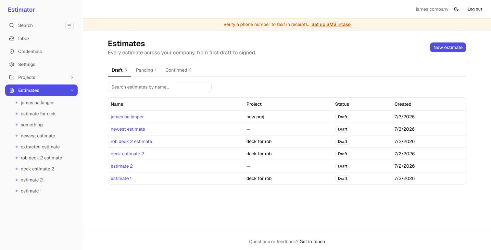
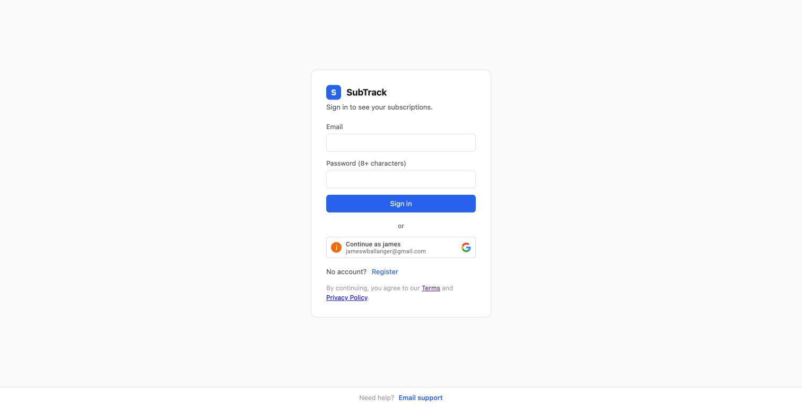
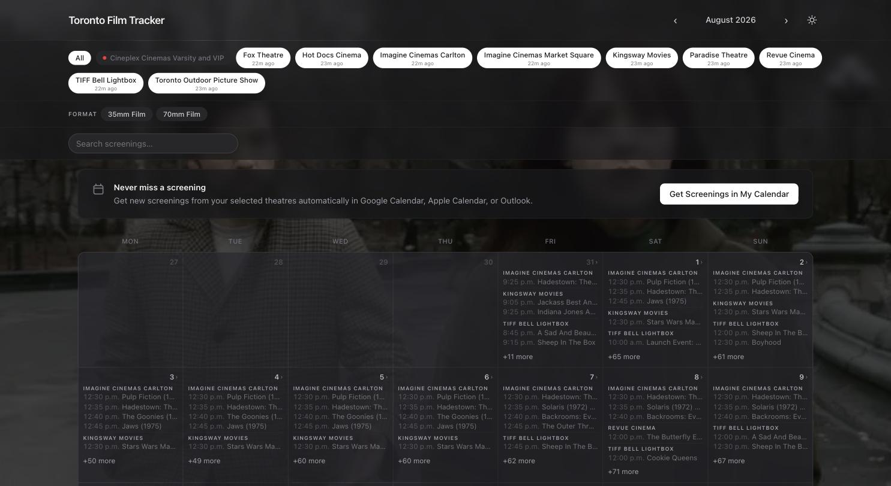
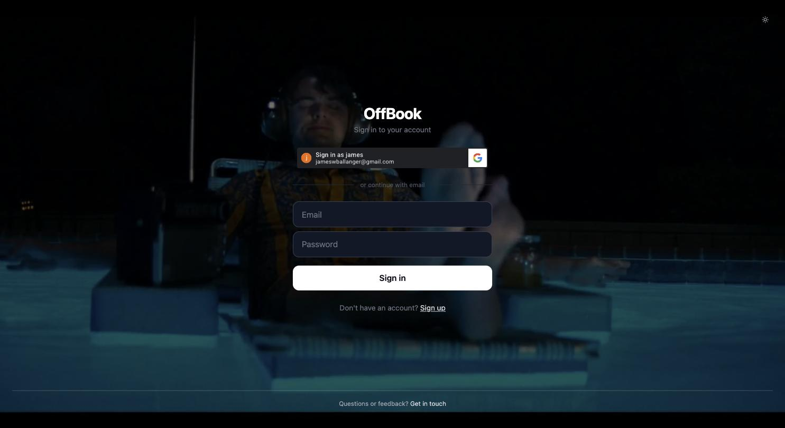

James Ballanger
Projects

Estimator
Turns historical purchasing documents into a searchable knowledge base for project estimating — upload a document, extract it with a vision LLM, auto-match line items to a material catalog, and pull historical pricing into new estimates.

SubTrack
Connects Canadian bank accounts via Plaid, imports transactions, and automatically detects recurring subscriptions.
Twitter Bots
A scheduler for multiple X/Twitter bot accounts — posts several times a day at randomized times, each account running independently with its own credentials.

Toronto Film Tracker
Scrapes screening listings from independent Toronto movie theatres, normalizes them into one schema, and serves an always-current schedule.

OffBook
A rehearsal-first script reader for actors — upload a PDF script and it reads every other character aloud while you perform your own lines, with live speech scoring in Audition mode or premium TTS scene work in Rehearsal mode.